Research suggestions use trusted GT. No correction has been applied. The proposed panel changes labels only, not mask shapes.
Check the two physical birds, GT plausibility and interval boundaries. Samples do not certify every intervening frame. Leave uncertain cases unapproved. Original predictions and GT stay unchanged.
| Event | Pair | Video interval | Frames | Preview |
|---|---|---|---|---|
| SWAP0001 | 38 / 75 | 3161–3233 | 73 | Review |
| SWAP0002 | 38 / 75 | 3099–3151 | 53 | Review |
| SWAP0003 | 38 / 75 | 3087–3095 | 9 | Review |
| SWAP0004 | 38 / 75 | 3154–3159 | 6 | Review |
| SWAP0005 | 38 / 75 | 3002–3006 | 5 | Review |
| SWAP0006 | 38 / 75 | 3235–3238 | 4 | Review |
Video 3160
Video 3161
Video 3197
Video 3233
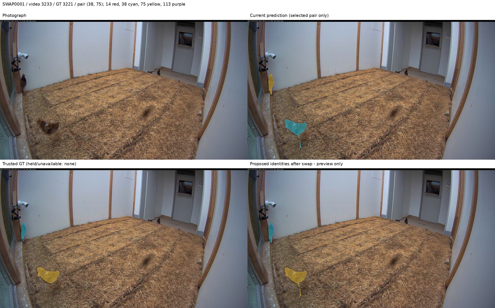
Video 3234
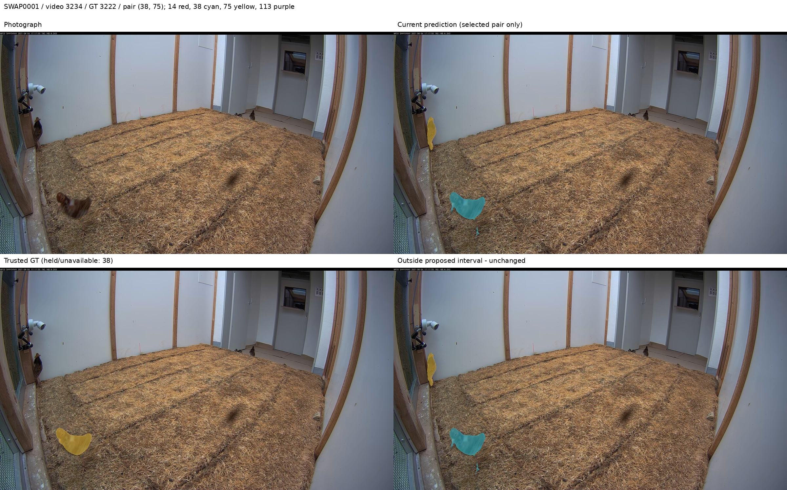
Video 3098
Video 3099
Video 3125
Video 3151
Video 3152
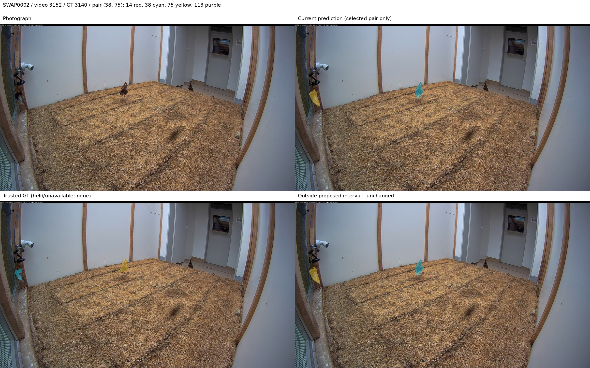
Video 3086
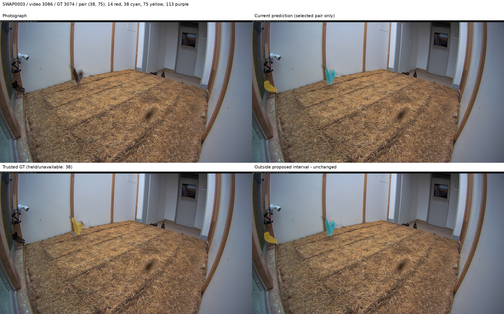
Video 3087
Video 3091
Video 3095
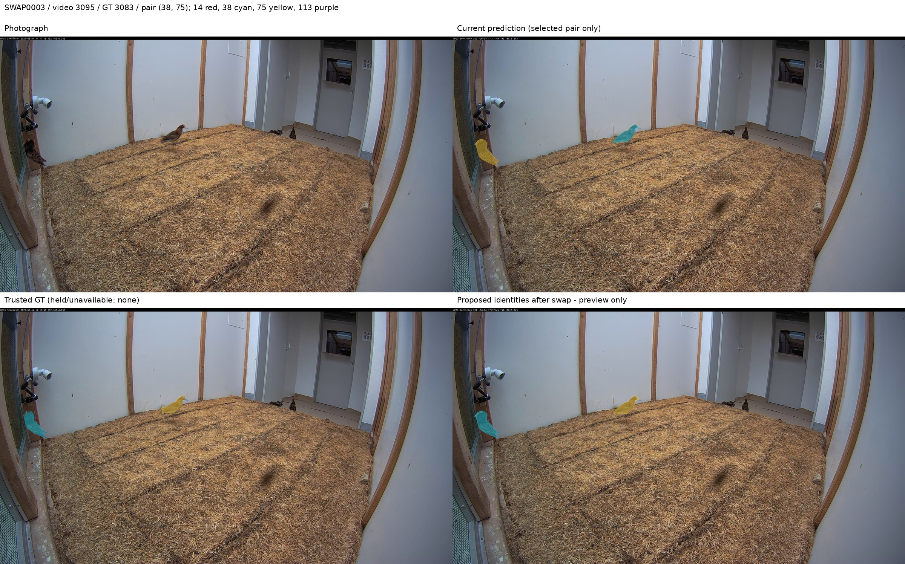
Video 3096
Video 3153
Video 3154
Video 3156
Video 3159
Video 3160
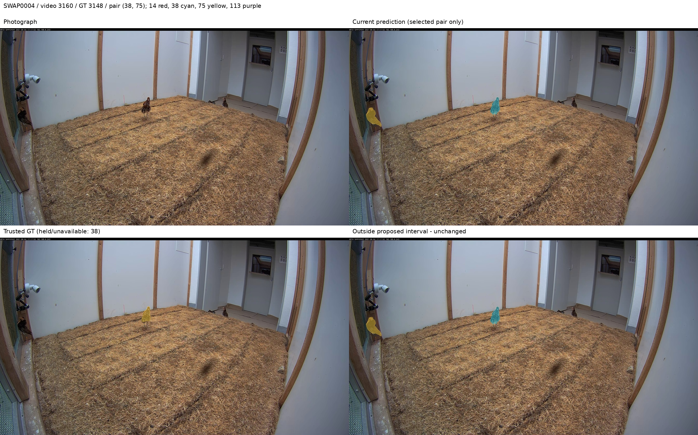
Video 3001
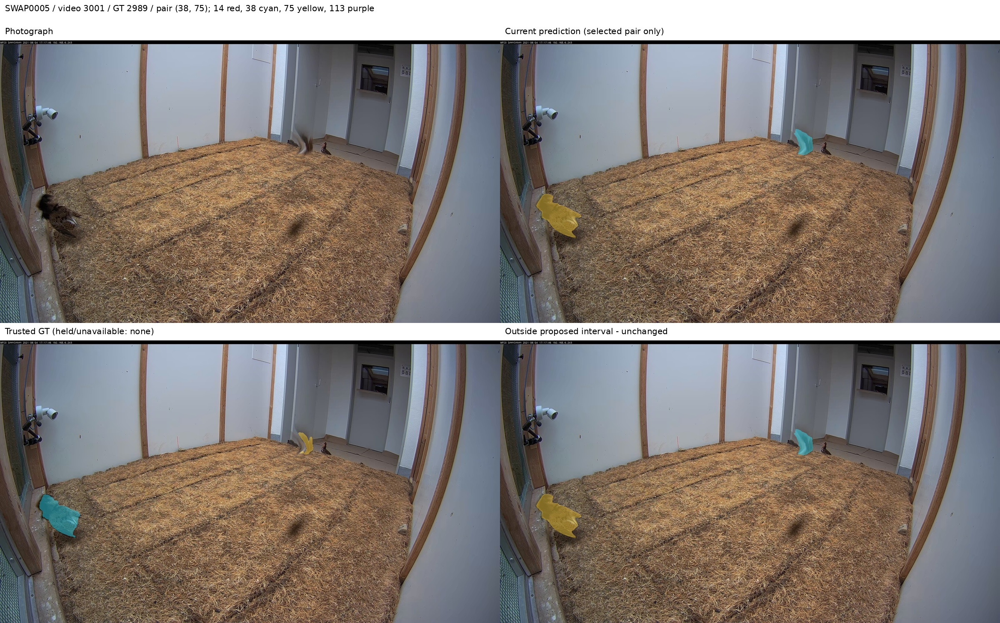
Video 3002
Video 3004
Video 3006
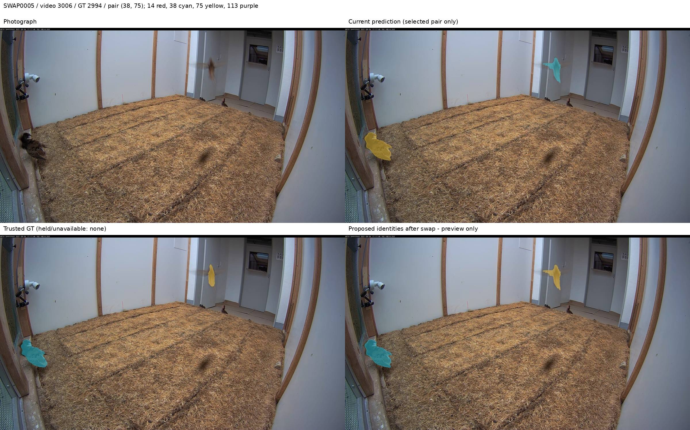
Video 3007
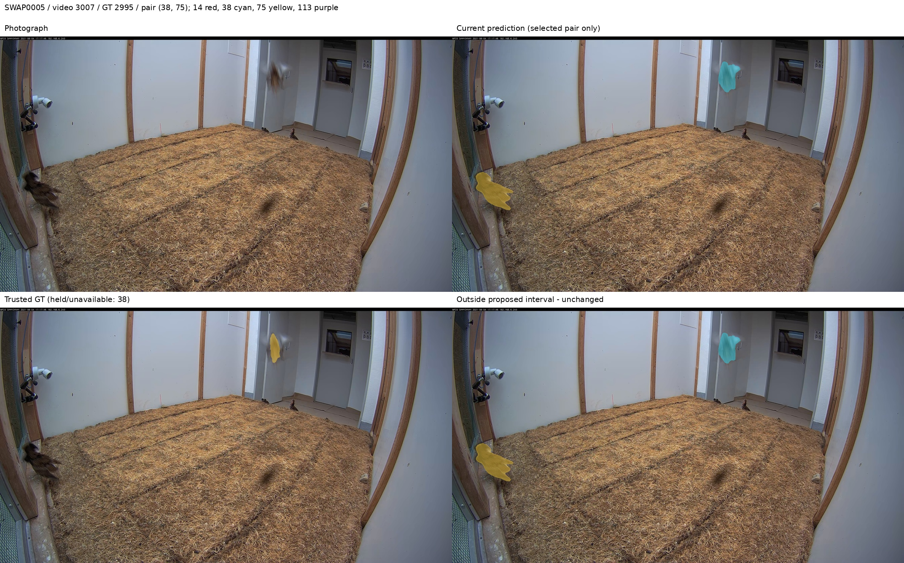
Video 3234
Video 3235
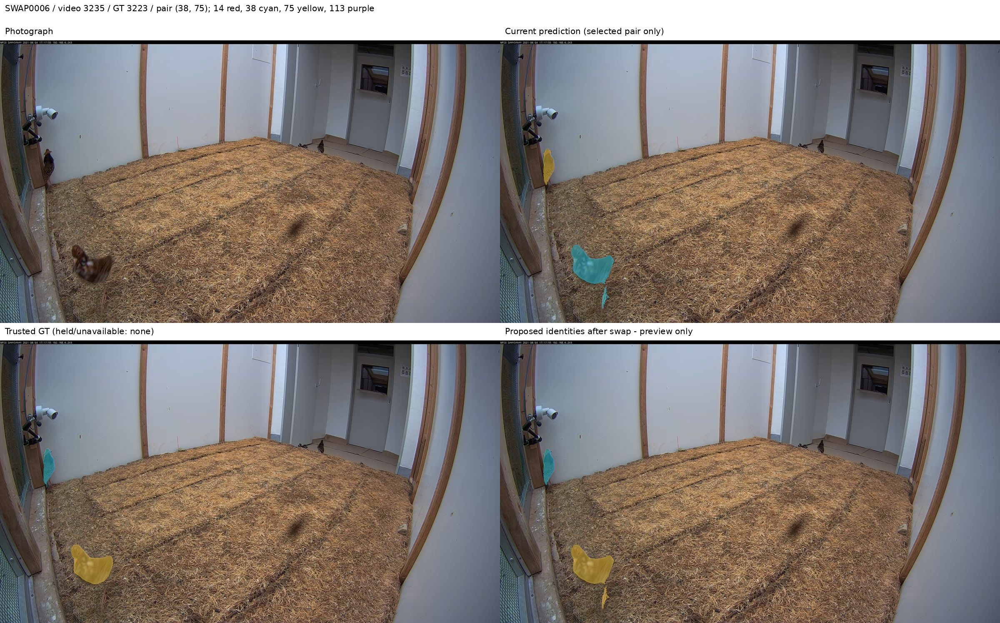
Video 3236
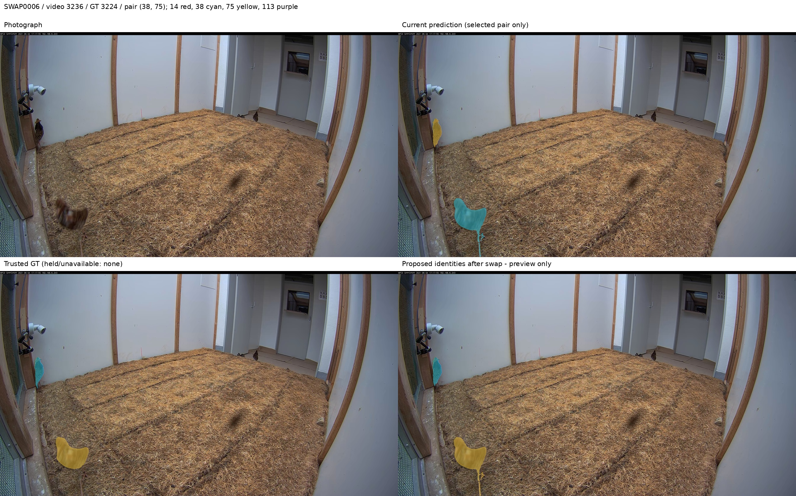
Video 3238
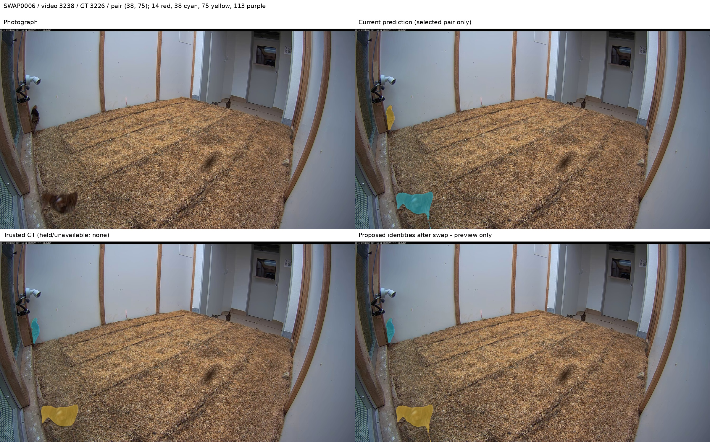
Video 3239
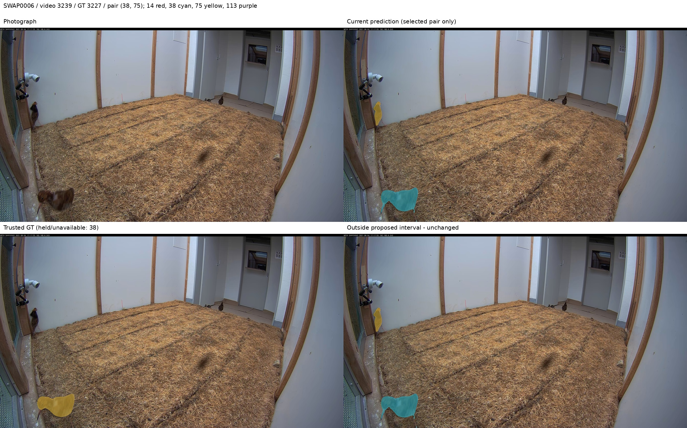